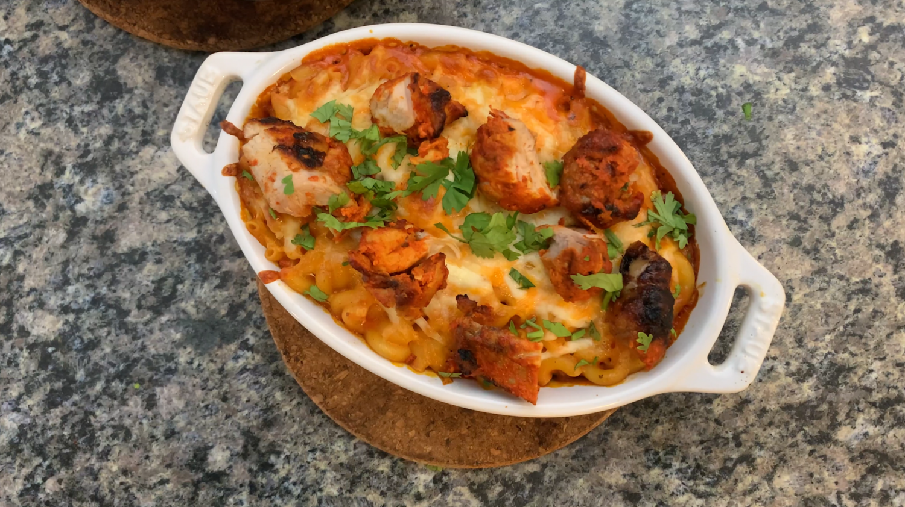

Butter Chicken Mac&Cheese
Credit to: Cooking with Anadi

Description
This recipe combines two massively popular dishes into one, delicious meal.
It fuses the comfort foods of butter chicken and mac and cheese, both unique to
different regions of the world, but widely consumed and praised. The combination of
creamy mac and cheese with the savory flavor of curry and flavorful
chicken is just so fun! If you're looking for a crowd pleaser, you've
come to the right place!
Ingredients
Chicken Tikka
- 3 boneless skinless chicken thighs
- 3 Tbsp lemon juice
- 1 Tbsp deggi mirch
- 1 1/2 tsp salt
- 5 Tbsp plain yogurt
- 1 1/2 Tbsp ginger-garlic paste
- 1 tsp garam masala
- 1 1/2 Tbsp deggi mirch
- 1/2 tsp salt
Makhani Sauce - The Ultimate Butter Sauce
- 3 Tbsp unsalted butter, divided in half
- 12-16 pods cardamom
- 8-12 small pieces of mace
- 1/4 Cup cashews
- 1 1/2 Tbsp ginger-garlic paste
- 500 ml passata
- 1 Tbsp deggi mirch
- 2-3 Tbsp honey
- 1 Tbsp kasoori methi/dried fenugreek leaves
- 1 Cup 10% cream/half and half creamt
- 1/2 tsp garam masala
Bechamel Sauce
- 1 Tbsp all purpose flour
- 1 Tbsp unsalted butter
- 300 mL cold milk
- 1/2 Cup mozzarella cheese, divided
- 1 Cup cheddar cheese, divided
- Salt and pepper to taste
Mac and Cheese
- 1/2x Chicken Tikka
- 1x Makhani Sauce
- 2/3x Bechamel Sauce
- 8oz macaroni
- Cilantro to garnish
Steps
Makhani Sauce
- In a large pot on medium heat, melt 1 1/2 Tbsp unsalted butter. Add cardamom, mace and cashews. Sauté for few minutes or until fragrant.
- Add ginger-garlic paste, mix well and stir often to prevent it from sticking. Cook until the rawness of ginger and garlic has been cooked off, about 4-5 minutes.
- Add passata, mix well and bring to a simmer. Add deggi mirch and 1 tsp of salt. Mix well, cover and cook for 10-12 minutes. Stir every 2-3 minutes.
- Add honey and remaining butter, mix well and continue cooking while stirring occasionally for 4-5 minutes. Turn off the heat, transfer mixture to a food processor. Puree the sauce completely, about 1-2 minutes.
- Place a fine mesh sieve over the pot, pour the pureed sauce over the sieve, and using a spatula or wooden spoon, work the sauce through the mesh. This step requires some work but is well worth it to get an incredibly smooth sauce.
- Crush the kasoori methi between the palms of your hand and add to the sauce and cook for 1-2 minutes to "wake up" the dried fenugreek leaves. The sauce may seem to thick at this stage, we'll fix that soon.
- Pour cream and garam masala and stir well. The cream will bring the desired consistency. Cook for only 2-3 minutes, any further cooking will make the sauce too thick. If this happens, add more cream to adjust consistency.
Chicken Tikka
For the first marinade
- In a medium sized bowl, add lemon juice, deggi mirch and salt for the first marinade and whisk well together.
- Cut the chicken into 1 1/2 inch pieces and add to marinade. Mix well, cover and let marinate for 20-30 minutes.
For the second marinade
- In the same bowl as the first marinade, add the rest of the ingredients for the second marinade.
- Mix well, cover and let marinate for at least 2 hours or preferably overnight.
To cook and serve
- Preheat oven at 450 F.
- Take chicken out of refrigerator about 30 minutes before cooking to take off the chill from the meat.
- In the meanwhile, prepare the baking sheet by placing wire rack over the sheet. Place marinated chicken pieces on the wire rack, making sure to space the pieces apart.
- Turn the oven to broil mode (top-most broiler if your oven has multiple broil modes). Carefully place the baking sheet on the top rack.
- After about 5-7 minutes, pour about 1/2 cup of water directly on baking sheet to prevent excess marinade from burning and smoking.
- Turn the pieces after about 10 minutes, rotate the pan 180 degrees and cook other side. This should take another 7-10 minutes. (Note: if you are making the chicken tikka as a side and not for a curry, during the last 10 minutes, baste with butter every 5 minutes)
- If serving as a starter, toss with some molten butter, chaat masala, sliced onions, cucumber and a lemon wedge. Serve hot and enjoy!
Bechamel Sauce
- Heat a pan on medium heat and add the butter. Once the butter melts, mix in the flour and cook for 2-3 mins until the rawness of the flour is cooked out.
- Pour in your milk, a little bit at a time while whisking to ensure no lumps. Once all your milk is mixed in, wait until your sauce starts to come to a boil.
- Once your sauce starts coming up to a boil, it will begin to thicken. Adjust for seasoning as needed.
- Once the sauce has thicken turn the heat off and add half of the cheddar and half of the mozzarella. Stir until the cheese has completely melted.
Mac and Cheese
- Preheat oven to 400 F. Cook the macaroni according the package directions. Set aside once cooked.
- Mix the makhani/buttery sauce in with the cheese sauce. Add macaroni and transfer into an oven safe dish or casserole and sprinkle the rest of your cheese.
- Bake in the oven at 400 F for 15-20 mins. Once it has finished, take it out of the oven and add the chicken and garnish with fresh cilantro.